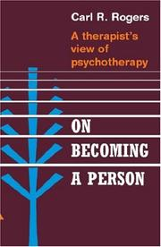

On Becoming a Person: A Therapist's View of Psychotherapy
Book·Carl Rogers, 1961·个人形成论

Explains how empathy, genuineness and unconditional positive regard support change.
- Author
- Carl Rogers
- Year
- 1961
- Difficulty
- Intermediate
- Kind
- Primary text
- Schools
- Person-Centered Therapy
- Core theories
- Necessary and Sufficient Conditions
Editions
- Chinese edition 《个人形成论》 [美] 卡尔·R·罗杰斯 · tr. 杨广学 / 尤娜 / 潘福勤 · 中国人民大学出版社 · 2004 Douban 9.1 (2543 ratings) Douban page ↗
- English edition On Becoming a Person: A Therapist's View of Psychotherapy Carl R. Rogers · Houghton Mifflin, first edition · 1961 Open Library ↗